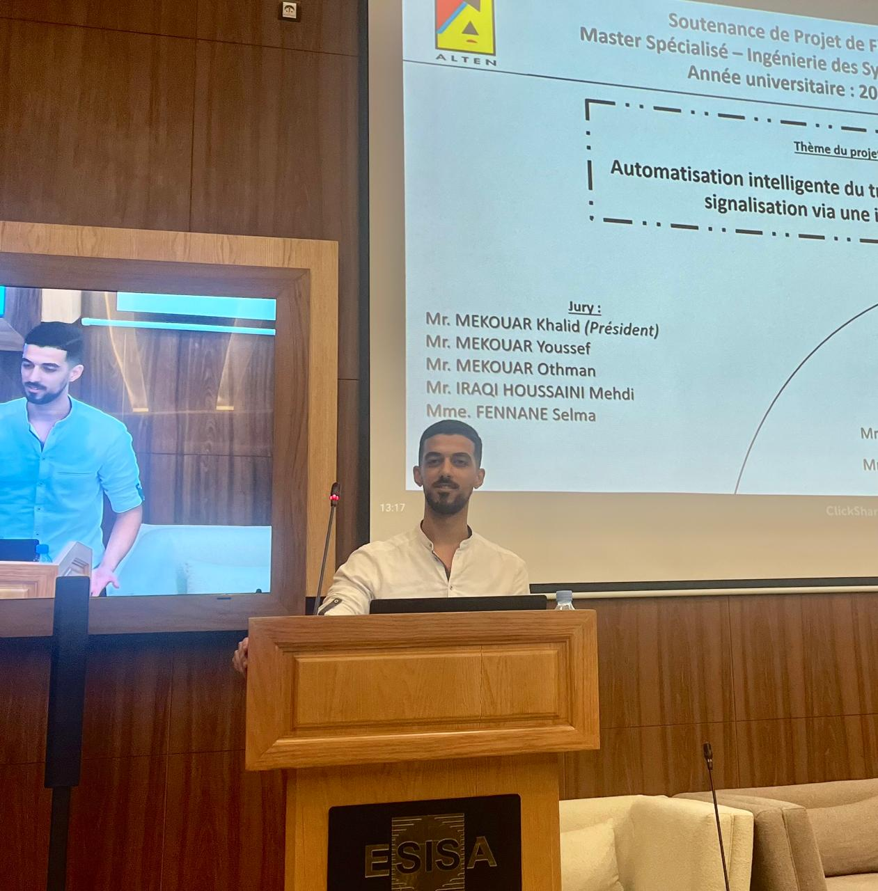

Bonjour, Je suis
AISSAOUI IDRISSI Issam
Ingénieur en Systèmes d'Information & IA
Détenteur d’un Master en Ingénierie des Systèmes d’Information et Intelligence Artificielle, je suis passionné par l’analyse prédictive, la gestion de données massives et le développement d’applications intelligentes. Mon parcours allie solides compétences en data science, développement full-stack et réseaux, que je mets au service de projets innovants mêlant IA, modélisation et automatisation.


